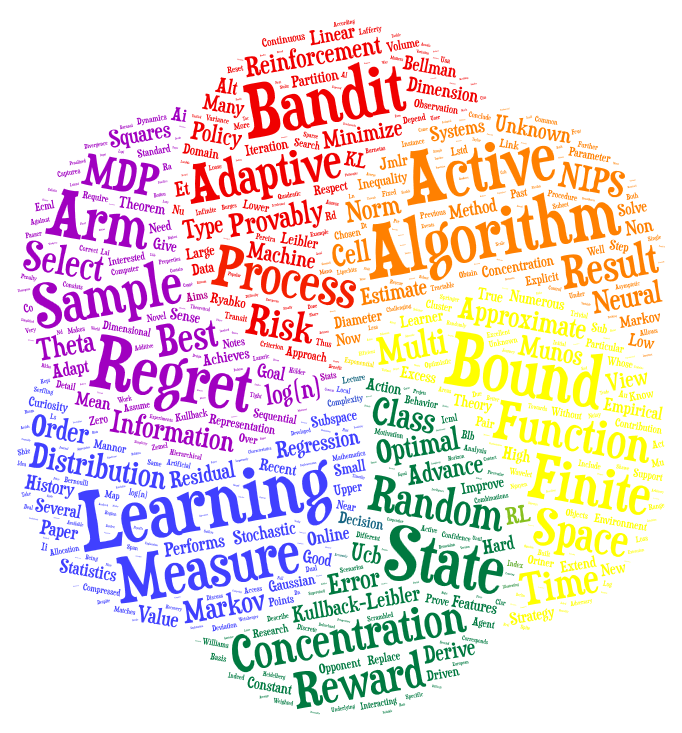

The very heart of sequentiel decision making
Mathematical Statistics for Sequential Learning
Provably adaptive decisions in the wild
Sequential Learning for Sustainable Systems
The wind of change - An avenue of novel applications.
All you need is a deep passion for mathematics, computer science and changing the world.
On these pages, you will find information regarding my research activities in the wide fields of Mathematics>Statistical Theory and Computer Science>Machine Learning.
You may want to read and comment on my publications, or follow much more interesting links.
For open positions (we do have several open positions in 2021), please go read this page as well as this one, and do not hesitate to get in touch by email as I have a bunch of exciting research projects to work on these days.
...
In case you
believe that understanding the dynamics of complex systems, as well as how to optimally act in them can have a huge positive impact on all aspects of human societies that require a careful management of natural, energetic, human and computational resources, and that it is thus our duty to optimally answer it,
consider that for that purpose, due to the limitations of human capabilities to process large amounts of data, we should pursue the long-term development of an optimal and automatic method that can, from mere observations and interactions with a complex system, understand its dynamics and how to optimally act in it,
want to attack this problem by using any combination of the following four pillar domains: Machine Learning, Mathematical Statistics, Dynamical Systems and Optimization,
then do not hesitate to contact me,
I'll be very happy to help you achieve this goal.

Budgeted RL with Continuous States
Reinforcement Learning State Representations
Adaptive Allocation for Learning Markov Chains
Practical Open-Loop Optimistic Planning
Exploiting State-Action Equivalence in RL
Sequential change-point detection
Robust Control of Uncertain Non-linear Dynamics
Variance of value function in RL regret bounds
Aggregating a growing number of experts
Boundary Crossing Probabilities
One trajectory Spectral Learning
Non-stationary Stochastic Bandits I
Random Shuffling for non-stationary bandits
Low-rank Latent bandits
Streaming confident regression
Pliable Rejection Sampling
Random Projections MCMC is hard
How hard is my MDP?
Selecting State Representations
Sub-sampling Bandits
Sampling without replacement
Latent Bandits
Robust risk-averse Bandits
Handling infinitely many state models
Better selecting the state representation
Optimal bandit allocation strategy
Random Projections Linear Regression
Active curiosity-based sampling
Active sampling and partitioning
Finite-time optimal bandit strategy
Selecting the state-representation in RL
Sparse recovery with Brownian sensing
Online learning with smooth opponents.
Bound for Bellman residual minimization
History-dependent Adaptive Bandits
Scrambled function spaces for regression
Random Projections for MDPs
Compressed least-squares regression
Many views agreement regularization
Have a good day :)
If you are interested in actively saving academic research in France, you may ask your university to open a “Travail de Communication de la Recherche (T.C.R)“, this is a Teaching Unit (Unité d’Enseignement) for students to practice communicating research activities.